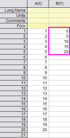
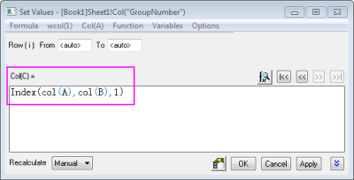
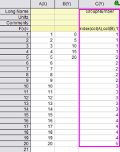
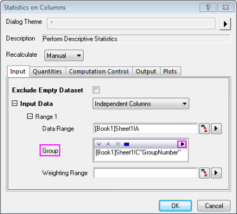
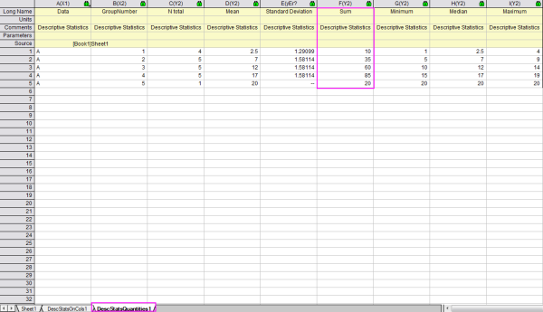

FAQ-837 Wie gruppiere ich Daten in Klassen und summiere die Daten jeder einzelnen Klasse?
how_to_group_data_into_bins_and_sum_up_the_data_of_each_bin_respectively
Letztes Update: 05.07.2016
Wenn Sie Ihre Daten in Klassen gruppieren und die jeweilige Summe der Daten in jeder Klasse berechnen möchten, können Sie als Workaround die Daten gruppieren, indem Sie zuerst Gruppennummern für die Daten festlegen, und danach Statistikwerte für die Gruppen berechnen.
Es wird angenommen, dass sich ein Datensatz von 1 bis 20 in Spalte A befindet. Sie können den folgenden Schritten folgen:
- Fügen Sie eine neue Spalte Spalte B hinzu und geben Sie die Werte der Klassenenden in Spalte B ein.
Wenn Sie zum Beispiel Daten in folgende Klassen gruppieren möchten: [0, 5), [5, 10), [10, 15) und [15, 20), dann geben Sie 0, 5, 10, 15 und 20 in jeder Zeile von Spalte B ein.
- 
- Fügen Sie eine neue Spalte Spalte C hinzu und legen Sie den Langnamen mit Gruppennummer fest.
- Markieren Sie Spalte C, klicken Sie dann mit der rechten Maustaste und wählen Sie Spaltenwerte errechnen… im Kontextmenü, um den Dialog Werte setzen zu öffnen.
- Geben Sie im Bearbeitungsfeld Spaltenformel
Index(col(A),col(B),1) ein.
- 
| Hinweis: Weitere Informationen zur Funktion Index finden Sie im LabTalk Guide. |
- Klicken Sie auf OK. Die Gruppennummern werden in Spalte C angezeigt.
In diesem Fall kennzeichnet die Gruppennummer 1, dass dieser Datenpunkt sich in der Klasse [0, 5) befindet, Gruppennummer 2, dass dieser Datenpunkt sich in der Klasse [5, 10) befindet und so weiter.
- 
- Markieren Sie Spalte A und wählen Sie dann Statistik: Deskriptive Statistik: Spaltenstatistik im Origin-Menü, um den Dialog Spaltenstatistik zu öffnen.
- Klicken Sie auf die dreieckige Schaltfläche des Elements Gruppe im Dialog und wählen Sie Spalte C im Ausklappmenü.
- 
- Klicken Sie auf OK. Die Summe von jeder Klasse befindet sich im Ergebnisblatt DescStatsQuantities1.
- 
Schlüsselwörter:Summe, Index, Werte setzen, Spaltenwerte errechnen, Deskriptive Statistik